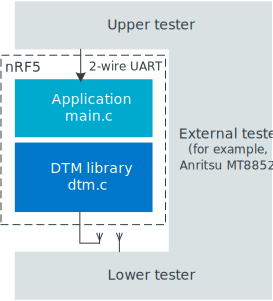
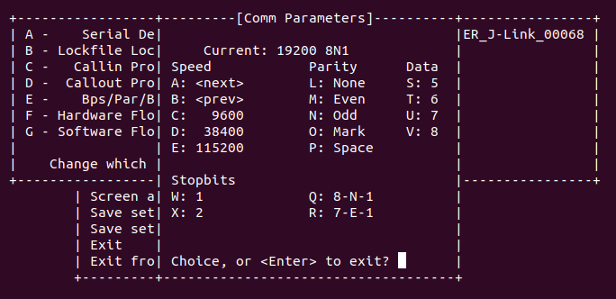
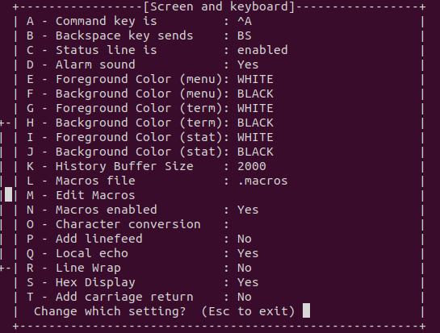

You can carry out conformance tests using dedicated test equipment, such as the Anritsu MT8852 or similar, with an nRF5 running the DTM sample set as device under test (DUT).
The DTM, Direct Test Mode library, which manages the nRF radio and controls the standard DTM procedures.
A sample that provides an external interface to the library.
You can find the source code of both parts here: samples/bluetooth/direct_test_mode/src.
The DTM sample contains a driver for a 2-wire UART interface.
The driver maps two-octet commands and events to the DTM library, as specified by the Bluetooth Low Energy DTM specification.

The implementation is self-contained and requires no Bluetooth Low Energy protocol stack for its operation.
The MPU is initialized in the standard way.
The DTM library function dtm_init configures all interrupts, timers, and the radio.
main.c may be replaced with other interface implementations, such as an HCI interface, USB, or another interface required by the Upper Tester.
The interface to the Lower Tester uses the antenna connector of the chosen development kit.
While in principle an aerial connection might be used, conformance tests cover the reading of the transmission power delivered by the DUT.
For this reason, a coaxial connection between the DUT and the Lower Tester is employed for all conformance testing.
The DTM function dtm_cmd_put implements the four commands defined by the Bluetooth Low Energy standard:
TESTSETUP (called RESET in Bluetooth 4.0)
RECEIVER_TEST
TRANSMITTER_TEST
TEST_END
In the dtm_cmd_put interface, DTM commands are accepted in the 2-byte format.
Parameters such as: CMD code, Frequency, Length, or Packet Type are encoded within this command.
The following DTM events are polled using the dtm_event_get function:
The following antenna switching patterns are possible:
1, 2, 3, …, N
1, 2, 3, …, N, N - 1, N - 2, …, 1
The application supports a maximum of 19 antennas in the direction finding mode.
The RADIO can control up to 8 GPIO pins for the purpose of controlling the external antenna switches used in direction finding.
To use this sample to test the Bluetooth Direction Finding feature, additional configuration of GPIOs is required to control the antenna array.
An example of such configuration is provided in a devicetree overlay file nrf5340dk_nrf5340_cpunet.overlay.
The overlay file provides the information about of the GPIOs to be used by the Radio peripheral to switch between antenna patches during the Constant Tone Extension (CTE) reception or transmission.
At least one GPIO must be provided to enable antenna switching.
The GPIOs are used by the radio peripheral in order given by the dfegpio#-gpios properties.
The order is important because it affects the mapping of the antenna switching patterns to GPIOs (see Antenna patterns).
To test Direction Finding, provide the following data related to antenna matrix design:
GPIO pins to dfegpio#-gpios properties in the nrf5340dk_nrf5340_cpunet.overlay file.
The default antenna to be used to receive the PDU dfe-pdu-antenna property in the nrf5340dk_nrf5340_cpunet.overlay file.
Note
The PDU antenna is also used for the reference period transmission and reception.
The antenna switching pattern is a binary number where each bit is applied to a particular antenna GPIO pin.
For example, the pattern 0x3 means that antenna GPIOs at index 0,1 is set, while the next ones are left unset.
This also means that, for example, when using four GPIOs, the pattern count cannot be greater than 16 and the maximum allowed value is 15.
If the number of switch-sample periods is greater than the number of stored switching patterns, the radio loops back to the first pattern.
The following table presents the patterns that you can use to switch antennas on the Nordic-designed antenna matrix:
You can add support for the nRF21540 front-end module (FEM) to the sample.
To add support for the nRF21540 FEM, build the sample for a board containing nRF21540 FEM like nrf21540dk_nrf52840 or create a devicetree overlay file describing how FEM is connected to nRF5 SoC in your device.
Note
If you use the nRF21540 EK, append nrf21540_ek shield to your build command instructing build system to append the appropriate devicetree overlay file.
If you use the nRF21540 DK, build your application for the nrf21540dk_nrf52840 board.
The devicetree for the nRF21540 DK already contains the required FEM configuration, so you do not need to set an additional build option.
For example, to build the sample from the command line for an nRF5340 DK with an attached nRF21540 EK, invoke the following command within the sample directory:
west build -b nrf5340dk_nrf5340_cpunet -- -DSHIELD=nrf21540_ek
For more details refer to the following documentation:
You can configure the transmitted power gain, antenna output and activation delay in nRF21540 using vendor-specific commands, see Vendor-specific packet payload.
The Skyworks SKY66114 and SKY66403 are front-end module (FEM) devices that support the 2-pin PA/LNA interface.
You can also use other Skyworks FEM devices that provide the same hardware interface.
Use case of incomplete physical connections to the FEM module
The devicetree configuration allows you to use a minimal pin configuration.
Connect all unused pins to the fixed logic level as instructed in the official documentation.
For example, csd-gpios is an optional pin that sets the device into sleep mode.
If this pin is not controlled by the driver, it must be connected to the fixed logic level.
You can configure the antenna output and activation delay for the Skyworks front-end module (FEM) using vendor-specific commands, see Vendor-specific packet payload.
The Bluetooth Low Energy 2-wire UART DTM interface standard reserves the Packet Type, also called payload parameter, with binary value 11 for a Vendor Specific packet payload.
The DTM command is interpreted as a vendor-specific one when both the following conditions are met:
Its CMD field is set to Transmitter Test, binary 10.
Its PKT field is set to vendor-specific, binary 11.
Vendor specific commands can be divided into different categories as follows:
If the Length field is set to 0 (symbol CARRIER_TEST), an unmodulated carrier is turned on at the channel indicated by the Frequency field.
It remains turned on until a TEST_END or RESET command is issued.
If the Length field is set to 1 (symbol CARRIER_TEST_STUDIO), this field value is used by the nRFgo Studio to indicate that an unmodulated carrier is turned on at the channel.
It remains turned on until a TEST_END or RESET command is issued.
If the Length field is set 2 (symbol SET_TX_POWER), the Frequency field sets the TX power in dBm.
The valid TX power values are specified in the product specification ranging from -40 to +4, where 0 dBm is the reset value.
Only the 6 least significant bits will fit in the Length field.
The two most significant bits are calculated by the DTM module.
This is possible because the 6 least significant bits of all valid TX power values are unique.
The TX power can be modified only when no Transmitter Test or Receiver Test is running.
If the Length field is set to 3 (symbol FEM_ANTENNA_SELECT), the Frequency field sets the front-end module (FEM) antenna output.
The valid values are:
0 - ANT1 enabled, ANT2 disabled
1 - ANT1 disabled, ANT2 enabled
If the Length field is set to 4 (symbol FEM_GAIN_SET), the Frequency field sets the front-end module (FEM) TX gain value in arbitrary units.
The valid gain values are specified in your product-specific front-end module (FEM).
For example, in the nRF21540 front-end module, the gain range is 0 - 31.
If the Length field is set to 5 (symbol FEM_ACTIVE_DELAY_SET), the Frequency field sets the front-end module (FEM) activation delay in microseconds relative to the radio start.
By default, this value is set to (radio ramp-up time - front-end module (FEM) TX/RX settling time).
If the Length field is set to 6 (symbol FEM_DEFAULT_PARAMS_SET) and the Frequency field to any value, the front-end module parameters, such as antenna output, gain, and delay, are set to their default values.
All other values of Frequency and Length field are reserved.
Note
Front-end module configuration parameters, such as antenna output, gain, and active delay, are not set to their default values after the DTM reset command.
Testers, for example Anritsu MT885, issue a reset command in the beginning of every test.
Therefore, you cannot run automated test scripts for front-end modules with other than the default parameters.
If you have changed the default parameters of the front-end module, you can restore them.
You can either send the FEM_DEFAULT_PARAMS_SET command or power cycle the front-end module.
main.c is an implementation of the UART interface specified in the Bluetooth Core Specification: Vol. 6, Part F, Chap. 3.
The default selection of UART pins is defined in zephyr/boards/arm/board_name/board_name.dts.
You can change the defaults using the symbols tx-pin and rx-pin in the DTS overlay file of the child image at the project level.
The overlay files for the nRF5340: Remote IPC shell child image are located in at child_image/remote_shell directory.
Note
On the nRF5340 development kit, the physical UART interface of the application core is used for communication with the tester device.
This sample uses the IPC UART driver for sending responses and receiving commands through the UART interface of the application core.
In this sample, the UART console is used to exchange commands and events defined in the DTM specification.
Debug messages are not displayed in this UART console.
Instead, they are printed by the RTT logger.
If you want to view the debug messages, follow the procedure in Connecting using RTT.
For more information about debugging in the nRF Connect SDK, see Debugging an application.
On the nRF5340 development kit, this sample requires the nRF5340: Remote IPC shell sample on the application core.
The Remote IPC shell sample is built and programmed automatically by default.
If you want to program your custom solution for the application core, unset the CONFIG_NCS_SAMPLE_REMOTE_SHELL_CHILD_IMAGE Kconfig option.
Conformance testing is done using a certified tester.
The setup depends on the tester used, and details about the test operation must be found in the tester documentation.
Application note nAN34 describes two alternatives for setting up a production test with DTM using one of our old devices.
Connect both development kits to the computer using a USB cable.
The computer assigns to the development kit a COM port on Windows or a ttyACM device on Linux, which is visible in the Device Manager.
Start TRANSMITTER_TEST by sending the 0x800x96 DTM command to one of the connected development kits.
This command will trigger TX activity on the 2402 MHz frequency (1st channel) with 10101010 packet pattern and 37-byte packet length.
Observe that you received the TEST_STATUS_EVENT packet in response with the SUCCESS status field: 0x000x00.
Start RECEIVER_TEST by sending the 0x400x96 DTM command to the second development kit.
Command parameters are identical to the ones used for the TRANSMITTER_TEST command.
Observe that you received the TEST_STATUS_EVENT packet in response with the SUCCESS status field: 0x000x00.
Finish RX testing using the TEST_ENDDTM command by sending the 0xC00x00 packet.
Observe that you received the PACKET_REPORTING_EVENT packet in response.
For example, the 0xD60xAC message indicates that 22188 Radio packets have been received.
Experiment with other combinations of commands and their parameters.
Connect the kit to the computer using a USB cable.
The kit is assigned a COM port (Windows) or ttyACM device (Linux), which is visible in the Device Manager.
Start the TRANSMITTER_TEST by sending the 0x800x96 DTM command to the connected development kit.
This command triggers TX activity on 2402 MHz frequency (1st channel) with 10101010 packet pattern and 37-byte packet length.
Observe that you received the TEST_STATUS_EVENT packet in response with the SUCCESS status field: 0x000x00.
Start the Direct Test Mode app in nRF Connect for Desktop and select the development kit to communicate with.
Set the Receiver mode and 37th channel in the test configuration menu.
Start the test.
On the application chart, observe that the number of RX packets is increasing for the 2402 MHz channel.
Stop the test.
Swap roles.
Set the application to the RX mode and the connected development kit to the TX mode.
To send commands to and receive responses from the development kit that runs the Direct Test Mode sample, connect to it with RealTerm in Windows or Minicom in Linux.
The Bluetooth Low Energy DTM UART interface standard specifies the following configuration:
Eight data bits
No parity
One stop bit
No hardware flow control
A selection of bit rates from 9600 to 1000000, one of which must be supported by the DUT.
It might be possible to run other bit rates by experimenting with parameters.
Note
The default bit rate of the DTM UART driver is 19200 bps, which is supported by most certified testers.
You must send all commands as two-byte HEX numbers.
The responses must have the same format.
Select Serial port setup and set UART baudrate to 19200.

Select Screen and keyboard and press S on the keyboard to enable the Hex Display.
Press Q on the keyboard to enable Local echo.

Minicom is now configured for receiving data.
However, you cannot use it for sending DTM commands.
Send DTM commands:
To send DTM commands, use echo with -ne options in another terminal.
You must encode the data as hexadecimal numbers (xHH, byte with hexadecimal value HH, 1 to 2 digits).
sudo echo -ne "encoded command" > DTM serial port
To send a Reset command, for example, run the following command: